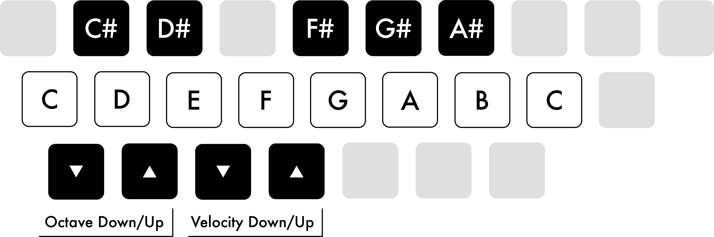

When the Computer MIDI Keyboard is enabled, you can play notes and adjust the octave and velocity ranges using the following keys:

The Computer MIDI Keyboard Layout.
Single letter shortcuts can still be used when the Computer MIDI Keyboard is active by adding Shift, e.g., ShiftS to solo a track.
41.25 Momentary Latching Shortcuts
Some shortcuts can be momentarily latched. This means you can hold down the shortcut key and briefly toggle the shortcut action. After releasing the key, Live’s UI will return to its previous state. Momentary latching becomes available after holding down a shortcut key for about 500 ms. The following shortcut keys can be momentarily latched:
A toggles Arrangement automation mode
B toggles Draw Mode
S toggles soloing the selected track
Z toggles zooming into the Arrangement selection
F1 through F8 toggle the Track Activator switch on and off for the first eight tracks
Tab toggles between Arrangement and Session View
If needed, momentary latching can be turned off using the Options.txt entry: -DisableHotKeyLatching
41.26 General Keyboard Navigation and Workflow
You can navigate through most of Live’s menus, views and controls using the computer keyboard.
The Navigate menu in Live’s menu bar contains commands for moving keyboard focus to different areas of the UI, as well as options for using Tab to navigate between controls. Additional navigation commands can also be found in the Display & Input Settings.
41.26.1 Using Tab for Navigation
When the Use Tab to Move Focus option is enabled, the Tab key can be used to navigate in the following ways:
Tab moves to the next control
ShiftTab moves to the previous control
The Tab key can also be used to navigate between controls in the Session and Arrangement mixers via these shortcuts:
CtrlTab (Win) / OptionTab (Mac) moves to the next control in the same row
CtrlShiftTab (Win) / OptionShiftTab (Mac) moves to the previous control in the same row
When Use Tab to Move Focus is off, pressing the Tab key will switch between Session and Arrangement View, as in previous Live versions.
In addition to using Tab to move focus, the following navigation options are also available:
Wrap Tab Navigation - When this option is enabled, navigating with Tab will not stop at the last control in a focused view, but will navigate back to the first control. If the first control is selected, using ShiftTab will navigate to the last control. This option can be enabled via the Navigate menu or the Display & Input Settings.
Move Clips with Arrow Keys - This option is enabled by default, and lets you use the left and right arrow keys to move selected clips and/or the time selection in Arrangement View. This behavior can be switched off in the Display & Input Settings if needed. When off, pressing the left arrow key collapses the time selection to the start point, while pressing the right arrow key collapses the time selection to the end point.
41.26.2 Navigating Between Controls in the Settings Menu
The Tab and ShiftTab keys can be used to navigate between options inside the Settings tabs. These shortcuts work regardless of whether the Use Tab to Move Focus option is active or not.
When a command is focused in any of the Settings tabs, the up and down arrow keys can be used to change the state of a toggle, make value adjustments, or cycle through the available options for a given command. It is also possible to use the Enter key to switch between toggle states.
To navigate between the different tabs in the Settings Page Chooser, use CtrlTab (Win) / OptionTab (Mac) and CtrlShiftTab (Win) / OptionShiftTab (Mac) or the up and down arrow keys when the chooser is focused. If the keyboard focus is on the first control of any given Settings tab, use the ShiftTab shortcut to return the focus to the Settings Page Chooser.
41.27 Editing Automation and Modulation Envelopes with the Keyboard
You can use the computer keyboard to add, edit, and delete breakpoints in automation and modulation envelopes. For more information about this workflow, see the Editing Automation and Modulation Envelopes section in the Accessibility and Keyboard Navigation chapter.
41.28 Accessing Menus
On Windows, you can access each menu by pressing Alt and the first letter of the menu (AltF for “File,” for instance). While a menu is open, you can use:
The up and down arrow keys to navigate the menu items.
The right and left arrow keys to open the neighboring menu.
Enter to choose a menu item.
On Mac, you can access individual menu entries by pressing Cmd?. This opens a search field that will suggest menu entries as you type. You can navigate the suggested options by pressing the up and down arrow keys and then press Enter to choose one.
41.29 Using Live’s Context Menu
A context menu is available in different areas of Live for quick access to commonly used menu items and actions. To access the context menu, right-click(Win) / Ctrl-click(Mac) on the part of the interface where you would like to execute a particular command. The context menu can also be opened using the shortcut Menu or ShiftF10 on Windows or VOShiftM on Mac. It is worth noting that the context menu may sometimes contain applicable options from Live’s Settings. You should change these options with care, as they will affect not only the currently selected item but also the general settings of the program.